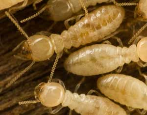
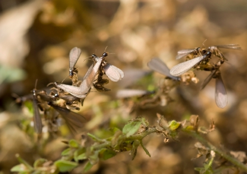
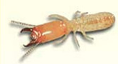

If you have a termite problem in your home, don’t panic. There are effective measures, such as termite baiting, to control termites.
Standard pest management methods for eliminating subterranean termites involve applying toxic chemicals to your home, your soil, or both. And “tenting” - basically wrapping and fumigating your entire home - is the most common way to dispatch drywood termites. The good news is many of the termite control methods available today are just as, if not more, effective than the toxic exterminations.
Professionally installed baiting systems are the least invasive and most sought after method for getting rid of subterranean termites. Although the active ingredients in the baits are toxic pesticides, they’re effective in contained, targeted, gram-sized doses as compared to dumping 100 to 150 gallons around your home. Baiting systems work by using the termite’s own process of feeding their hoards to deliver poison to the entire colony.
Small bait stations are inserted into the ground around the perimeter of the home. Non-baited wood is placed in each station and they are monitored quarterly for termite activity. If termites are found feeding in a bait station, wood baited with the chemical is inserted. The termites will take the baited wood back to the colony for wider consumption.
“Our baiting system not only stops the termites from feeding on a home, but offers total colony elimination,” says Dave Maurer, marketing manager for the Sentricon System. “And we only use the active chemical ingredient when termites are feeding. When the colony is destroyed, we take the active ingredient out.”
The Sentricon System is accepted as a LEED-approved termite-control system and is currently in use at the White House and the Statue of Liberty. “We place a high-priority on stewardship,” says Maurer. “Quarterly monitoring means we can keep track of treatment efficacy and help catch new colonies before they do damage.”
It can sometimes take several months for a baiting system to destroy a colony, which seems like a long wait. But, most termite damage takes place over the course of years, not months, Maurer says.
Do-it-yourself baiting systems are also available at home and hardware stores.
Extreme heat is the only nonchemical method for destroying drywood termites, and the most proven method for ensuring you’ve completely eliminated a colony. The process is probably the closest you can get to organic termite control.
For whole-house treatment, the structure is tented and hot air is pumped into it. For isolated treatment, the hot air travels through ducts directed into specific areas, such as a wall. Air temperatures must reach 160 degrees Fahrenheit, bringing the wood to 130 degrees (about as hot as a dry sauna), and remain at that level for about an hour.
The price for a full structure thermal treatment for the remediation of drywood termites is comparable to a standard chemical fumigation treatment. But, consider this: “It takes one day compared to three days and two nights. Best of all, its 100 percent nontoxic,” says Ron Ketner, co-owner of AZEX Pest Solutions, an Arizona pest control company. “If you crunch the numbers, a Thermapureheat treatment is much less of a burden on both the environment and your wallet.”
Other natural termite control options have lower success rates on their own, but could be used as part of an eco-friendly integrated pest management plan. Some of these options include:
If you have the luxury of starting from scratch and are in the process of constructing a new house, there are many preventive measures you can employ to stop termite damage before it happens.
Sand, stone, or mesh specifically designed for termite control can be installed around and under a home, creating a barrier termites can’t cross. These physical barriers provide a protective buffer between the hungry insects and potential food sources in a house similar to their chemical-barrier counterpart - but without the toxicity.
Boric acid can be used for termite control. Borate treatments, although often also recommended for post-construction treatments, have a much higher efficacy rate when used as a preventative measure. You can purchase borate-treated wood, spray or brush a borate solution onto untreated wood, fill voids with borate foam, or dust voids with boric acid.
All the termites on Earth outweigh all the humans seven to one. That fact is frequently cited by pest control companies and incites instant heebie-jeebies. But there’s no need to pour buckets of pesticides on your home. A termite is just another bug. Find a pest control professional you trust and insist on natural control methods.
There are primarily two types of termites commonly found in homes in the United States, and each type requires a different method of treatment. Identification of which type is buggin’ you is crucial; here are some basics:
Subterranean termites live in all states in the United States, except Alaska. They cause more property damage nationwide than fire and wind combined. They live in the soil and feed on dead or decaying wood. Moisture is essential to their survival, and they are highly susceptible to dehydration and temperature extremes. Formosan termites, which have a reputation as being aggressive, intelligent and hard-to-kill, are a variety of subterranean termite.
Drywood termites are found in warm coastal regions of the United States and live deep inside the wood on which they feed. Their colonies are much smaller than those of the subterranean variety, but drywood termites are more difficult to detect - they are usually only seen if they swarm.
Knowing what to look for is the first step in thwarting an invasion. Some signs of an active termite problem are:
|
 ISTOCKPHOTO/MICHAEL PETTIGREW Subterranean termites eat wood, but live primarily in soil. |
 ISTOCKPHOTO/MELINDA FAWVER Adult Eastern subterranean termites swarm and mate in spring. |
 WWW.THERMAPURE.COM Drywood termites live primarily in hot areas of the United States along the coasts. |